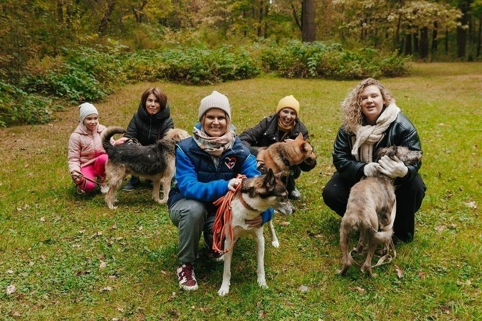

Как понять собаку без слов: лекцция для волонтёров прошла с аншлагом
08.04.2026

В минувшее воскресенье в приюте «Вторая жизнь» состоялась открытая лекция открытаяприглашённого зоопсихолога, эксперта
по коррекции поведения собак - Алексея Воронова. Мероприятие посетили 23 волонтёра, включая тех, кто только начинает
помогать приюту, и опытных кураторов.
Во второй части лекции волонтёры разобрали реальные кейсы из жизни приюта: переход в новый вольер,
адаптация после улицы, знакомство с кошками. «Самое важное - не наказывать, а понять причину. Собака
почти всегда хочет быть хорошей, ей просто нужно помочь», - поделился Алексей.
Лекция вызвала большой отклик. Волонтёры договорились собраться на практическое занятие через две недели.
Благодарим Алексея за полезный материал и всех, кто нашёл время прийти. Следующая лекция будет посвящена
первой помощи животным. Следите за анонсами!